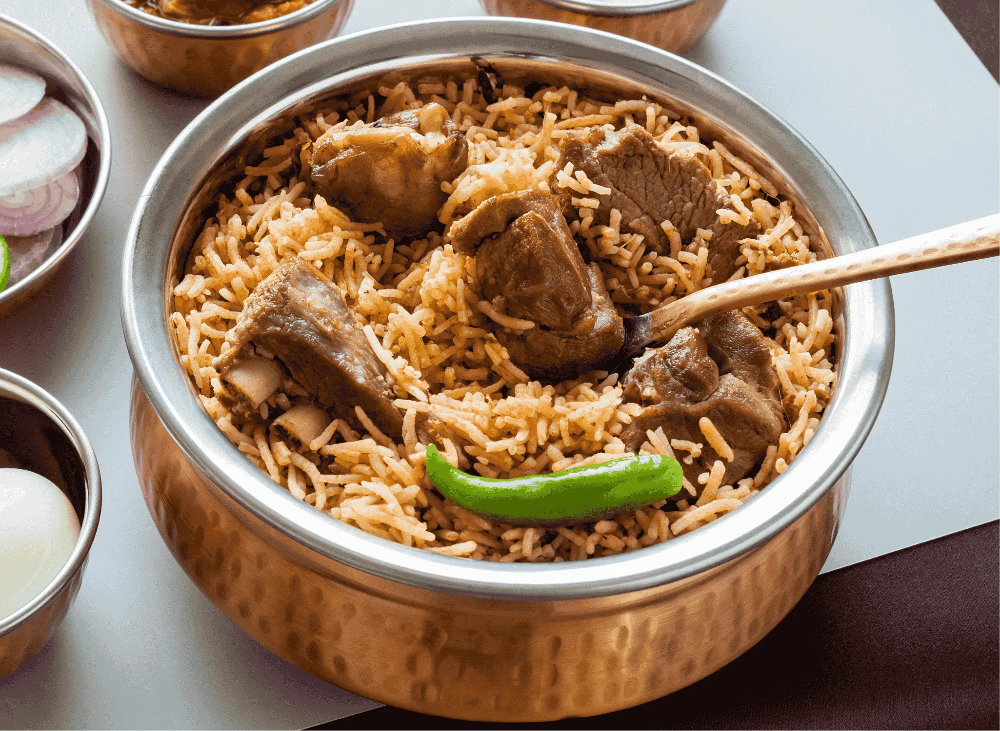

Mutton Biryani
Prep Time: 1 hour
Cook Time: 45 minutes
Servings: 5
Ingredients:
- 500g Mutton (bone-in)
- 2 cups Basmati rice
- 2 large onions (sliced)
- 1 cup curd
- 2 tomatoes (chopped)
- 2 tbsp ginger-garlic paste
- Whole spices (bay leaf, cinnamon, cloves, cardamom)
- 1 tsp red chili powder
- 1/2 tsp turmeric
- 1 tsp garam masala
- Mint and coriander leaves – handful each
- Salt and oil as needed
Instructions:
- Marinate mutton with curd, chili powder, turmeric, salt, and ginger-garlic paste for 1 hour.
- Pressure cook mutton for 3–4 whistles or until tender.
- In a pot, heat oil and fry onions till golden brown. Set half aside for garnish.
- Add whole spices, tomatoes, mint, and coriander. Sauté well.
- Add cooked mutton with its stock. Simmer for 5 minutes.
- Cook rice separately till 70% done. Strain and keep aside.
- Layer rice over mutton mixture. Add fried onions and mint on top.
- Cover with lid and dum cook on low flame for 15–20 minutes.
- Gently fluff and serve hot with raita or brinjal gravy.
- note: similary same process for chiken briyani